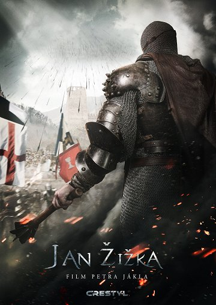
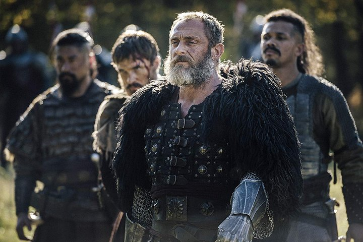
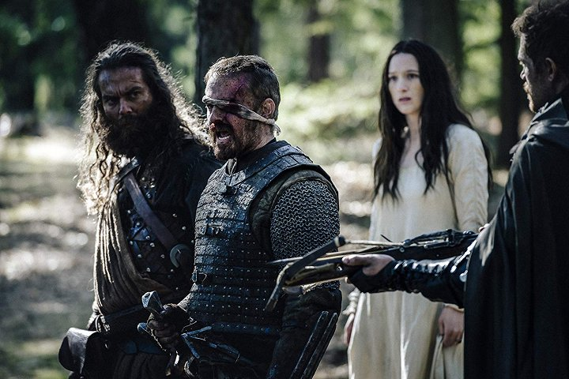
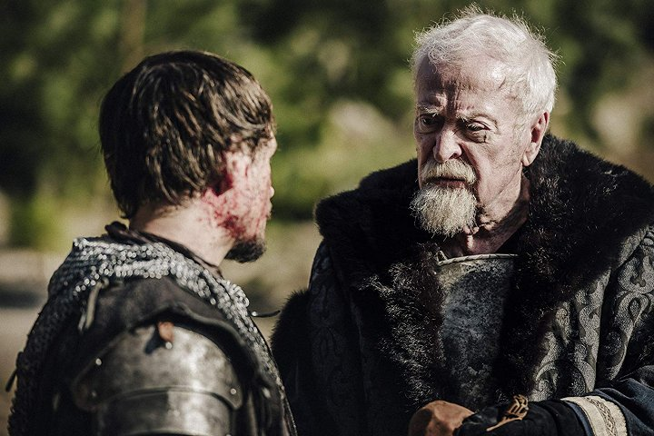
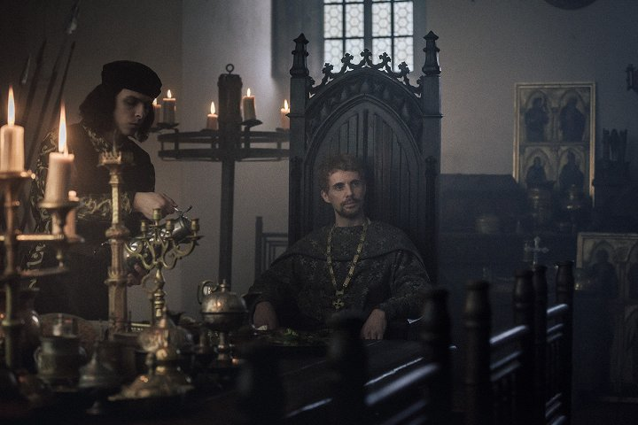
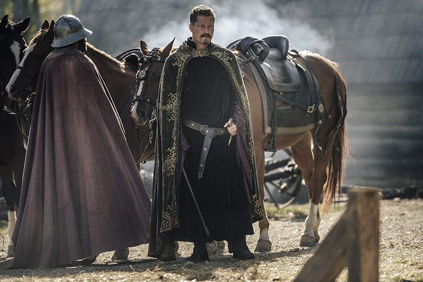
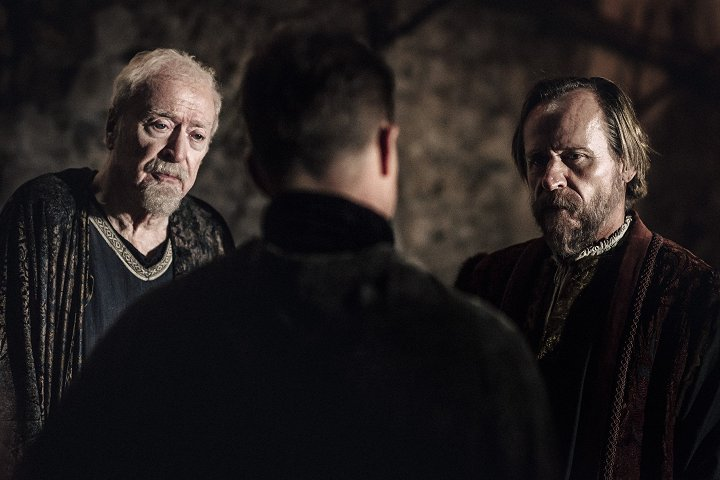

Detail filmu


| Rok vydání: | 2022 | |
|---|---|---|
| Žánr: | Životopisný / Historický / Drama / Akční | |
| Premiéra: | 20.10.2022 | |
| Délka: | - | |
| Přístupnost: | - | |
| Režie | Petr Jákl | |
| Obsazení | Ben Foster, Michael Caine, Til Schweiger, William Moseley, Sophie Lowe, Karel Roden, Roland Møller, Matthew Goode, Ondřej Vetchý, Marek Vašut, Ben Cristovao, Aneta Kernová, Denisa Pfauserová, Bohuslav Hrdlička, Daniel Vávra ... |
Jan Žižka
Medieval
Film inspirovaný skutečným příběhem jednoho z největších vojevůdců své doby, nikdy neporaženým Janem Žižkou z Trocnova, který se stal díky svým činům legendou. Evropa na konci 14. století. Vše, co vybudoval Karel IV., císař římský a zároveň český král, se rozpadá. Staleté pořádky se otřásají v základech. Císařův prvorozený syn a nástupce Václav IV. je příliš slabým panovníkem do takové doby. Přední magnát v zemi, pan Jindřich z Rožmberka, pohlcuje dvorce svobodných zemanů jeden po druhém. Ale jeden z nich se mu postaví, jeho jméno je Jan Žižka.
Galerie





